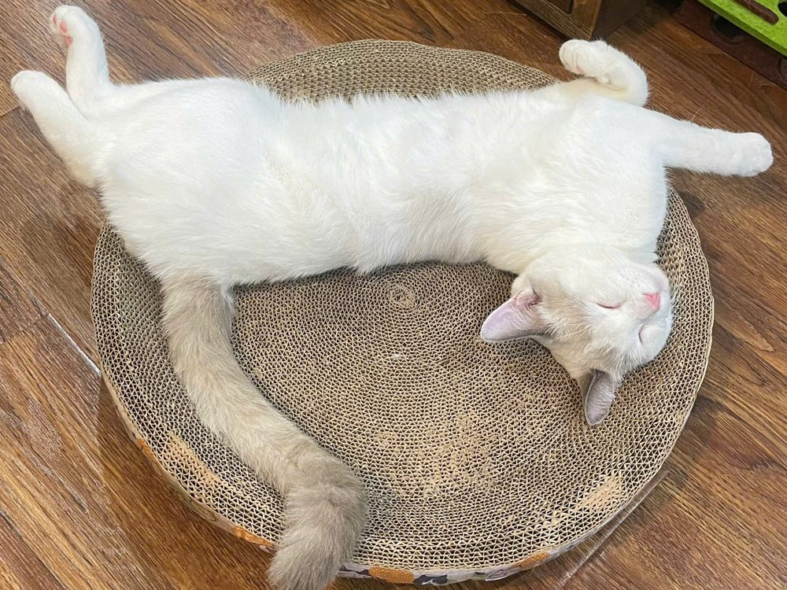

Sư phạm Âm nhạc · Portfolio INF2501
Quỳnh Hương
Sinh viên Sư phạm Âm nhạc, mong muốn trở thành một giáo viên âm nhạc sáng tạo và tận tâm — người đưa âm nhạc đến gần hơn với học trò.
Về mình
Xin chào, mình là Đinh Thị Quỳnh Hương
Thông tin
- Họ và tên
- Đinh Thị Quỳnh Hương
- Ngành học
- Sư phạm Âm nhạc
- Mã sinh viên
- 2552210185
- Lớp
- INF2501_2
- Trường
- Đại học Sư phạm Nghệ thuật Trung ương
Sở thích
- 🐱 Chơi với mèo
- ✈️ Đi du lịch
- 🎤 Đi concert nghe nhạc
Âm nhạc với mình không chỉ là ngành học: những đêm concert là nơi mình được nghe, được cảm và học hỏi cách người nghệ sĩ kết nối với khán giả.

1–2 câu của bạn: vì sao chọn Sư phạm Âm nhạc, thế mạnh chuyên môn (thanh nhạc / nhạc cụ nào). Và kiểm tra lại câu về concert ở trên đã đúng ý bạn chưa.
Định hướng
Mục tiêu học tập và định hướng phát triển
Mục tiêu học tập
- Không ngừng học hỏi, mở rộng hiểu biết với những điều mới.
- Nắm vững kiến thức chuyên sâu về âm nhạc và phương pháp giảng dạy âm nhạc.
- Rèn luyện kỹ năng sư phạm cùng các kỹ năng bổ trợ, trong đó có kỹ năng số.
Định hướng nghề nghiệp
Trở thành giáo viên Âm nhạc sáng tạo, tận tâm tại các trường học hoặc trung tâm nghệ thuật.
Ước mơ xa hơn
Khởi nghiệp, mở một trung tâm giảng dạy âm nhạc của riêng mình.
Portfolio này để làm gì
Mục tiêu của Portfolio
Hồ sơ năng lực số
Trình bày lại 6 bài tập của 6 chương, cho thấy cả sản phẩm cuối cùng lẫn quá trình mình làm ra nó.
Bước đầu của hồ sơ dạy học
Tập quản lý tư liệu một cách khoa học — nền tảng để sau này lưu giáo án, bản nhạc, video thị phạm của một giáo viên âm nhạc.
Lưu trữ và chia sẻ
Gom tệp PDF, hình ảnh, video và liên kết về một nơi, truy cập công khai, dễ gửi cho thầy cô và bạn bè.
Nền móng cho thương hiệu cá nhân
Một Portfolio chỉn chu là cách giới thiệu năng lực với nhà trường, phụ huynh và học viên — hữu ích khi mình mở trung tâm âm nhạc.
Mọi công cụ AI được dùng đều ghi rõ mục đích ở từng bài và tại trang Tổng kết.
Tuỳ chọn · điểm cộng
Video giới thiệu
Nếu có video 30–60 giây (ví dụ hát hoặc đàn một đoạn ngắn và giới thiệu bản thân): gửi link YouTube hoặc Google Drive để nhúng vào đây. Không làm thì xoá mục này.